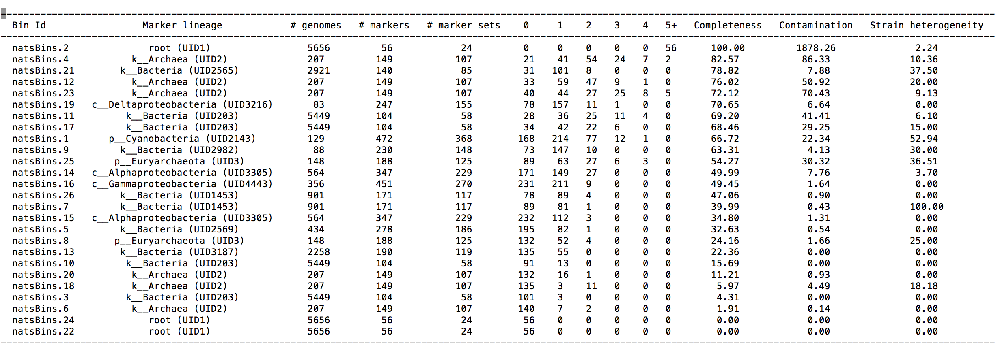

Assembly Mapping and Binning
Overview
Teaching: 10 min
Exercises: 40 minQuestions
How can I begin to analyse my metagenome?
Objectives
Use divide and conquer approaches to break your metagenome up into your data into sections
Use a metagenome binning package to bin contigs on the basis of DNA characteristics
Use a metagenome binning assesment tool to evaluate the taxonomic composition of your metagenome bins
Read mapping, prepare for binning and coverage assessment
bowtie2-build final.contigs.fa contigs
bowtie2 -x contigs -1 ../mySamplefiltered_1P.fq.gz -2 ../mySamplefiltered_1P.fq.gz -U ../mySamplefiltered_12U.fq.gz -S contigs.reads.mapped.sam
convert sam to bam file for MetaBat
samtools view -bS contigs.reads.mapped.sam | samtools sort - contigs.sorted.bam
MetaBat binning
There are numerous options to optimise the binning procedure. There are several tutorials available through the metabat site. There are also numerous different metagenome binning programs avialable
/usr/local/anaconda2/bin/runMetaBat.sh -t 4 final.contigs.fa contigs.sorted.bam
Executing: 'jgi_summarize_bam_contig_depths --outputDepth final.contigs.fa.depth.txt --pairedContigs final.contigs.fa.paired.txt --minContigLength 1000 --minContigDepth 1 contigs.sorted.bam' at Sunday 14 October 20:45:39 AEDT 2018
Output depth matrix to final.contigs.fa.depth.txt
Output pairedContigs lower triangle to final.contigs.fa.paired.txt
minContigLength: 1000
minContigDepth: 1
Output matrix to final.contigs.fa.depth.txt
Opening 1 bams
Consolidating headers
Allocating pairedContigs matrix: 50 MB over 1 threads
Processing bam files
Thread 0 finished: contigs.sorted.bam with 21505375 reads and 4144361 readsWellMapped
Creating depth matrix file: final.contigs.fa.depth.txt
Closing most bam files
Creating pairedContigs matrix file: final.contigs.fa.paired.txt
Closing last bam file
Finished
Finished jgi_summarize_bam_contig_depths at Sunday 14 October 21:05:22 AEDT 2018
Creating depth file for metabat at Sunday 14 October 21:05:22 AEDT 2018
Executing: 'metabat2 -t 4 --inFile final.contigs.fa --outFile final.contigs.fa.metabat-bins4/bin --abdFile final.contigs.fa.depth.txt' at Sunday 14 October 21:05:22 AEDT 2018
MetaBAT 2 (v2.12.1) using minContig 2500, minCV 1.0, minCVSum 1.0, maxP 95%, minS 60, and maxEdges 200.
26 bins (40709463 bases in total) formed.
Finished metabat2 at Sunday 14 October 21:15:32 AEDT 2018
[1]+ Done gzip *fq (wd: ~)
(wd now: ~/assembly5)
mv bins to bins directory
First find the output directory where your bins are stored
ls
contig.stats final.contigs.fa final.contigs.fa.metabat-bins4 intermediate_contigs
contigs.sorted.bam done final.contigs.fa.depth.txt final.contigs.fa.paired.txt
and change its name so that we are all on the same page
mv final.contigs.fa.metabat-bins4 metabat.bins
Analyse bins using CheckM.
checkm lineage_wf -f metabat.bins/checkm.txt -t 4 -x fa metabat.bins/ metabat.bins/scg
When this analysis is done open and explore the results
nano metabat.bins/checkm.txt
Your output should look similar to this

checkm bin_qa_plot -x fa checkm metabat.bins plots
Note checkm can plot a lot of metrics. If you have time, check the manual and try to produce some plots to visualise the size and quality of the binned contigs.
You now have a set (10-30, or more) of binned contigs with some descriptive taxonomic information that can be used to inform the next steps of your analyses.
Question:
Which bins should we keep for downstream analysis?
Are there any near-complete genomes with long contigs and good coverage?
Can you already being to formulate hypotheses about the source of your metagenome based on the collective taxonomic composition of the metagenome bins?
This recent paper provides some relevant background reading The reconstruction of 2,631 draft metagenome-assembled genomes from the global oceans
The workflow for this paper was published on protocols.io so that the research could be transparently reproduced, and the code reused.
Reproducible research
Why is reproducibility important in data science?
There are a number of tools that we can start to use now to help document the commands and rationale for each step in your workflow. Some common examples include “markdown” formatted notebooks in python (e.g. Jupyter notebook) and R notebooks available through R studio.
Github is a popular tool that software developers use to develop and document programming code. Github provides a public repository that implements “version control”. Version control and collprovides
You are strongly encouraged to get started with Github now so that you can make use of this resource during the next year of your studies. You may be surprised how useful it is! For example There are several current MRes students taking advantage of the preformatted Latex template to write their MRes Theses. This allows them to efficiently track their changes and receive feedback on their writing from their supervisors.
You might be asking “How do I get started?”. Why not start with the “Hello World” tutorial and then start a repository to keep a copy of your metagenomics workflow.
Next steps: Detailed annotation of your metagenome bins
We have now split our data up into 10-30, or more smaller data sets. Now is a good time to stop and think about how we are going to analyse them allows without repeating our commands over and over and over!
Key Points
A metagenome assembly combines overlapping sequences into contiguous sections of DNA called contigs
An assembly is an effective way of reducing our data